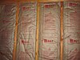

insulation

Definition: In the context of construction, the R-value is a measure of how well a two-dimensional barrier, such as a layer of insulation, a window or a complete wall or ceiling, resists the conductive flow of heat. R-value is the temperature difference per unit of heat flux needed to sustain one unit of heat flux between the warmer surface and colder surface of a barrier under steady-state conditions. The measure is therefore equally relevant for lowering energy bills for heating in the winter, for cooling in the summer, and for general comfort.
Source: Wikipedia
Wikipedia Page (Something wrong with this association? Let us know.)
Wikidata Page (Something wrong with this association? Let us know.)